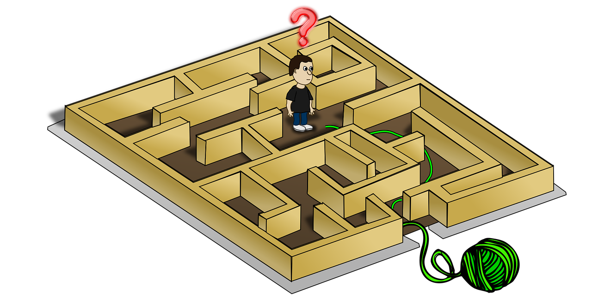
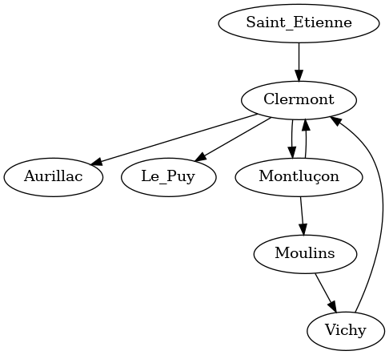

Détective Pikaptcha, ou s'échapper d'un labyrinthe
Valentin PORTAIL - Prép'ISIMA 1 - 2021/2022

Image montant un personnage essayant de sortir d'un labyrinthe grâce à un "fil d'Ariane"
Table des matières
1 Premier exercice : Cartographier le labyrinthe
1.1 Enoncé du problème
On dispose d'une grille représentant un labyrinthe et contenant deux types de valeurs :
- Un 0 s'il y a un passage.
- Un # s'il y a un mur, c'est-à-dire, une case infranchissable.
Chaque case de la grille possède au maximum 4 voisins (en haut, en bas, à gauche ou à droite). Les cases en diagonale ne sont donc pas adjacentes.
L'objectif est d'analyser la grille donnée et de la renvoyer en remplaçant les 0 par le nombre de passages adjacents, c'est-à-dire, le nombre de cases 0 autour de chaque case. Les murs (#) ne seront pas remplacés.
Le programme prendra en argument :
- deux entiers width et height représentant respectivement la largeur et la hauteur de la grille
- un nombre height de chaînes de caractères nommées line et de longueur width contenant chacune une ligne de la grille avec les caractères 0 et #.
La grille est entourée de murs infranchissables. Il faudra donc vérifier les cases valides.
Le programme devra retourner les height chaînes de caractères de width caractères qui contiendront chacune une ligne de la grille transformée.
1.2 Solution proposée
Puisqu'on aura besoin de toutes les lignes pour pouvoir analyser les passages adjacents, on les stocke dans un tableau à deux dimensions appelé maze qui contient les cases du labyrinthe.
Chaque case sera identifiée par ses coordonnées i et j indiquant respectivement les coordonnées verticale et horizontale de la case.
On commence par demander à l'utilisateur la largeur et la hauteur du labyrinthe, puis les lignes une à une.
int width; // Largeur du labyrinthe int height; // Hauteur du labyrinthe scanf("%d%d", &width, &height); int i; // L'index vertical d'une case int j; // L'index horizontal d'une case char maze[101][101]; // Un tableau à 2 dimensions qui contiendra les cases du labyrinthe for (i = 0; i < height; ++i) { char line[101]; scanf("%s", line); for (j = 0; j < width; ++j) { maze[i][j] = line[j]; // On place chaque case dans le tableau } }
On parcourt ensuite le labyrinthe ligne par ligne et colonne par colonne. Pour chaque case (i, j) qui n'est pas un mur, on compte le nombre de passages autour de la case, puis on remplace le 0 par ce nombre dans le tableau maze.
On affiche enfin les résultats ligne par ligne.
for (i = 0; i < height; ++i) { for (j = 0; j < width; ++j) { // On parcourt chaque case du tableau if (maze[i][j] != '#') { // Si la case n'est pas un mur int passages = 0; // On va compter le nombre de passages adjacents if (i > 0 && maze[i-1][j] != '#') { // S'il y a un passage valide en haut passages += 1; } if (i < height-1 && maze[i+1][j] != '#') { // S'il y a un passage valide en bas passages += 1; } if (j > 0 && maze[i][j-1] != '#') { // S'il y a un passage valide à gauche passages += 1; } if (j < width-1 && maze[i][j+1] != '#') { // S'il y a un passage valide à droite passages += 1; } maze[i][j] = '0' + passages; // Permet de convertir le nombre en un caractère ASCII } } maze[i][width] = '\0'; // Permet d'indiquer que la ligne est bien finie (pour éviter les erreurs) printf("%s\n", maze[i]); }
Voici le plan du programme final :
#include <stdio.h> int main() { <<pika1_demander_variables>> <<pika1_compter_passages>> return 0; }
1.3 Tests
1.3.1 Test 1
Entrée :
5 3 0000# #0#00 00#0#
Sortie attendue :
1322# #2#31 12#1#
Test réussi
1.3.2 Test 2
Entrée :
9 3 #00###000 000000000 000##0000
Sortie attendue :
#22###232 244223443 232##2332
Test réussi
1.3.3 Test 3
Entrée :
3 3 0#0 #0# 0#0
Sortie attendue :
0#0 #0# 0#0
Test réussi
1.3.4 Test 4
Entrée :
7 6 00000#0 0#0#000 00#00## 000#000 #0#00#0 0#00#00
Sortie attendue :
22322#1 2#1#322 32#13## 241#322 #1#22#2 0#12#12
Test réussi
1.4 Description d'une autre solution
Cette solution a été proposée sur Codingame par l'utilisateur "xerneas02" :
#include <stdlib.h> #include <stdio.h> char tab[101][101]; int main() { int width, height, i, j, count; scanf("%d%d", &width, &height); for (i = 0; i < height; i++) scanf("%s", tab[i]); for (i = 0; i < height; i++) { for(j = 0; j < width; j++){ if(tab[i][j] == '#')continue; if(i < height-1 && tab[i+1][j] != '#') tab[i][j]++; if(j < width-1 && tab[i][j+1] != '#') tab[i][j]++; if(i > 0 && tab[i-1][j] != '#') tab[i][j]++; if(j > 0 && tab[i][j-1] != '#') tab[i][j]++; } } for(i=0 ; i < height ; i++) printf("%s\n", tab[i]); return 0; }
Cette solution a un principe similaire à la mienne. Elle compte le nombre de passages adjacents et le met dans un tableau.
Cependant, elle possède plusieurs avantages :
- Elle est plus compacte que la mienne (24 lignes contre 48 pour la mienne).
- Elle modifie directement les variables du tableau au lieu de passer par un entier supplémentaire que l'on reconvertit en caractère.
En revanche, on peut aussi noter plusieurs défauts :
- L'usage de la commande continue qui est déconseillé.
- Certaines instructions sont sur la même ligne que les boucles qui leur sont associées et ne sont pas entourées d'accolades.
- Le tableau tab est défini avant le main.
2 Deuxième exercice : Explorer le labyrinthe
2.1 Enoncé du problème
On dispose d'une grille similaire au premier exercice représentant un labyrinthe et contenant deux types de valeurs :
- Un 0 s'il y a un passage.
- Un # s'il y a un mur, c'est-à-dire, une case infranchissable.
La position et la direction de départ sont données par un caractère spécial :
- > : vers la droite
- v : vers le bas
- < : vers la gauche
- ^ : vers le haut
Un caractère permet d'indiquer le mur que l'on doit suivre :
- R : Il faut suivre le mur de droite
- L : Il faut suivre le mur de gauche
L'objectif est de parcourir le labyrinthe et de le renvoyer en remplaçant les 0 par le nombre de fois que l'on est passé par chaque case. Les murs # ne seront pas remplacés.
Le programme prendra en argument :
- deux entiers width et height représentant respectivement la largeur et la hauteur de la grille
- un nombre height de chaînes de caractères nommées line et de longueur width contenant chacune une ligne de la grille avec les caractères 0 et #, ainsi qu'un unique caractère >, v, < ou ^ représentant la situation de départ.
- un caractère side de valeur R ou L représentant le mur à suivre.
La grille est entourée de murs infranchissables. Il faudra donc vérifier les cases valides.
Le programme devra retourner les height chaînes de caractères de width caractères qui contiendront chacune une ligne de la grille transformée.
2.2 Solution proposée
Dans ce programme, on notera la direction avec un entier compris entre 0 et 3 de la manière suivante :
- 0 : droite
- 1 : bas
- 2 : gauche
- 3 : haut
Chaque case sera identifiée par ses coordonnées i et j indiquant respectivement les coordonnées verticale et horizontale de la case.
On notera la direction de départ, les coordonnées de la case de départ et de la case suivante.
On commencera dans le programme principal par demander à l'utilisateur la largeur et la hauteur du labyrinthe, les lignes du labyrinthe une à une et le mur qu'il faut suivre.
int width; // Largeur du labyrinthe int height; // Hauteur du labyrinthe scanf("%d%d", &width, &height); char maze[101][101]; // Un tableau à 2 dimensions qui contiendra les cases du labyrinthe int i; // Coordonnée verticale d'une case int j; // Coordonnée horizontale d'une case int direction; // 0 : droite / 1 : bas / 2 : gauche / 3 : haut int direction_depart; int depart_i; // Coordonnée verticale de la case de départ int depart_j; // Coordonnée horizontale de la case de départ int next_i = -1; // Coordonnée verticale de la case suivante int next_j = -1; // Coordonnée horizontale de la case suivante // Initialisation à des valeurs impossibles pour le while for (i = 0; i < height; ++i) { char line[256]; scanf("%s", line); for (j = 0; j < width; ++j) { maze[i][j] = line[j]; // On place chaque case dans le tableau } } char side[2]; // Mur qu'il faut suivre scanf("%s", side);
On définit ensuite deux fonctions nouveau_i et nouveau_j qui prennent en argument la coordonnée initiale i ou j, la direction direction et la largeur width pour i ou la hauteur height pour j. Elles renvoient la nouvelle coordonnée en allant dans la direction indiquée.
int nouveau_i (int i, int direction, int height) { int nv_i; if (((direction == 3) && (i == 0)) || ((direction == 1) && (i == height - 1))) { nv_i = -1; // Coordonnée impossible } else { switch (direction) { case 1: // Si on va en bas nv_i = i + 1; break; case 3: // Si on va en haut nv_i = i - 1; break; default: // Sinon nv_i = i; } } return nv_i; } int nouveau_j (int j, int direction, int width) { int nv_j; if ((direction == 2 && j == 0) || (direction == 0 && j == width - 1)) { nv_j = -1; // Coordonnée impossible } else { switch (direction) { case 0: // Si on va à droite nv_j = j + 1; break; case 2: // Si on va à gauche nv_j = j - 1; break; default: // Sinon nv_j = j; } } return nv_j; }
On commence par trouver la case de départ, on récupère la direction initiale et on donne à la case la valeur 0.
int case_depart_trouvee = 0; // Booléen indiquant si la case de départ a été trouvée i = 0; while ((case_depart_trouvee == 0) && (i < height)) { j = 0; while (case_depart_trouvee == 0 && j < width) { if (maze[i][j] != '0' && maze[i][j] != '#') { case_depart_trouvee = 1; depart_i = i; depart_j = j; switch (maze[i][j]) { case '>': // Si on va à droite direction = 0; break; case 'v': // Si on va en bas direction = 1; break; case '<': // Si on va à gauche direction = 2; break; case '^': // Si on va en haut direction = 3; break; default: // Sinon (cas exceptionnel) direction = -1; } } ++j; } ++i; }
Une fois cette case trouvée, on parcourt le labyrinthe. Plusieurs cas sont possibles :
- S'il n'y a pas de mur à gauche (ou à droite), on tourne à gauche (ou à droite) et on avance d'une case.
- S'il y a un mur à gauche (ou à droite) et s'il y a un mur en face, on tourne à droite (ou à gauche).
- Sinon, on avance d'une case sans tourner.
On ajoute 1 à chaque case sur laquelle on va.
i = depart_i; j = depart_j; direction_depart = direction; maze[i][j] = '0'; while (maze[next_i][next_j] != maze[depart_i][depart_j] || (maze[depart_i][depart_j] == '0' && (maze[depart_i][depart_j] != '0' || direction != direction_depart))) { // On s'arrête quand : // - On est sur la case de départ et : // - La case de départ n'est plus à 0 ou // - La case de départ est toujours à 0 et la direction est celle de départ (on a fait un tour complet sans bouger) int devant_i = nouveau_i(i, direction, height); int devant_j = nouveau_j(j, direction, width); // Coordonnées de la case tout droit if (side[0] == 'L') { // Si on suit le mur de gauche int gauche_i = nouveau_i(i, (direction+3) % 4, height); int gauche_j = nouveau_j(j, (direction+3) % 4, width); // Coordonnées de la case à gauche if ((gauche_i != -1 && gauche_j != -1) && maze[gauche_i][gauche_j] != '#') { // S'il n'y a pas de mur à gauche next_i = gauche_i; next_j = gauche_j; // On va à gauche direction = (direction + 3) % 4; // On tourne à gauche maze[next_i][next_j] += 1; } else if ((devant_i == -1 || devant_j == -1) || maze[devant_i][devant_j] == '#') { // S'il y a un mur devant next_i = i; next_j = j; // On reste au même endroit direction = (direction + 1) % 4; // On tourne à droite } else { // Sinon next_i = devant_i; next_j = devant_j; // On va tout droit sans changer de direction maze[next_i][next_j] += 1; } } else if (side[0] == 'R') { // Si on suit le mur de droite int droite_i = nouveau_i(i, (direction+1) % 4, height); int droite_j = nouveau_j(j, (direction+1) % 4, width); // Coordonnées de la case à droite if ((droite_i != -1 && droite_j != -1) && maze[droite_i][droite_j] != '#') { // S'il n'y a pas de mur à droite next_i = droite_i; next_j = droite_j; // On va à droite direction = (direction + 1) % 4; // On tourne à droite maze[next_i][next_j] += 1; } else if (devant_i == -1 || devant_j == -1 || maze[devant_i][devant_j] == '#') { // S'il y a un mur devant next_i = i; next_j = j; // On reste au même endroit direction = (direction + 3) % 4; // On tourne à gauche } else { next_i = devant_i; next_j = devant_j; // On va tout droit sans changer de direction maze[next_i][next_j] += 1; } } i = next_i; j = next_j; }
Enfin, on affiche les lignes une par une :
for (i = 0; i < height; ++i) { maze[i][width] = '\0'; // Pour éviter les erreurs lors de la lecture de la ligne printf("%s\n", maze[i]); }
Voici le plan du programme final :
#include <stdio.h> <<pika2_fonctions>> int main() { <<pika2_demander_variables>> <<pika2_trouver_depart>> <<pika2_parcourir_labyrinthe>> <<pika2_afficher_lignes>> return 0; }
2.3 Tests
2.3.1 Test 1
Entrée :
5 3 >000# #0#00 00#0# L
Sortie attendue :
1322# #2#31 12#1#
Test réussi
2.3.2 Test 2
Entrée :
9 3 #00###000 0000<0000 000##0000 R
Sortie attendue :
#11###000 112210000 111##0000
Test réussi
2.3.3 Test 3
Entrée :
3 3 0#0 #># 0#0 L
Sortie attendue :
0#0 #0# 0#0
Test réussi
2.3.4 Test 4
Entrée :
7 6 00000#0 0#0#000 00#0^## 000#000 #0#00#0 0#00#00 R
Sortie attendue :
22322#1 2#1#322 21#01## 131#000 #1#00#0 0#00#00
Test réussi
2.4 Description d'une autre solution
Cette solution a été proposée sur Codingame par l'utilisateur "Reynalde" :
#include <stdlib.h> #include <stdio.h> #include <string.h> #include <stdbool.h> ///////////////////////////////////// char dL[4] = {'<', '^', '>', 'v'}; char dR[4] = {'>', '^', '<', 'v'}; char dL1[4] = {'^', '>', 'v', '<'}; char dR1[4] = {'v', '>','^','<'}; char dL2[4] = {'>', 'v', '<', '^'}; char dR2[4] = {'<', 'v', '>', '^'}; char dL3[4] = {'v', '<', '^', '>'}; char dR3[4] = {'^', '<', 'v', '>'}; ///////////////////////////////////// struct position{ int x,y; char dir; bool move; }; typedef struct position pos; ////////////////// Deplacement ////////////////// pos moving(char grid[][256], pos p, char side, int h, int w, char directions[4]){ int x = p.x; int y = p.y; int j=0; bool trouve=false; while(!trouve && j < 4){ if ((directions[j] == '>' && y < w - 1 && grid[x][y+1] !='#') || !grid[x][y+1]==directions[j]){ p.x=x; p.y=y+1; p.dir= '>'; p.move=true; trouve=true; }else if ((directions[j] == '^' && x > 0 && grid[x-1][y] != '#') || !grid[x-1][y]==directions[j]){ p.x=x-1; p.y=y; p.dir= '^'; p.move=true; trouve=true; }else if ((directions[j] == '<' && y > 0 && grid[x][y-1] != '#') || !grid[x][y-1]==directions[j]){ p.x=x; p.y=y-1; p.dir= '<'; p.move=true; trouve=true; }else if ((directions[j] == 'v' && x < h - 1 && grid[x+1][y] != '#') || !grid[x+1][y]==directions[j]){ p.x=x+1; p.y=y; p.dir= 'v'; p.move=true; trouve=true; } j++; } return p; } //////////////////////////////////////////////// int main(){ int w,h,x,y; scanf("%d%d", &w, &h); char grid[256][256]; pos p; bool end=false; for (int i = 0; i < h; i++) { char line[256]; scanf("%s", line); for(int j = 0; j < w; j++){ grid[i][j]=line[j]; line[j] != '0' && line[j] != '#' ? p.x = i, p.y = j, p.dir = line[j], p.move=false : 0; } } int pos=0; int index; int x_d = p.x; int y_d = p.y; char side[2]; scanf("%s", side); char s=side[0]; while(end!=true){ if (s=='L'){ if (p.dir == '^') p=moving(grid,p,s,h,w,dL); else if (p.dir == '>') p=moving(grid,p,s,h,w,dL1); else if (p.dir == 'v') p=moving(grid,p,s,h,w,dL2); else if (p.dir == '<') p=moving(grid,p,s,h,w,dL3); }else{ if (p.dir == '^') p=moving(grid,p,s,h,w,dR); else if (p.dir == '>') p=moving(grid,p,s,h,w,dR1); else if (p.dir == 'v') p=moving(grid,p,s,h,w,dR2); else if (p.dir == '<') p=moving(grid,p,s,h,w,dR3); } x = p.x; y = p.y; if(grid[x][y] == '>' || grid[x][y] =='<' || grid[x][y] == '^' || grid[x][y] == 'v'){ grid[x][y]='0'; end=true; }else if(x == x_d && y == y_d){ int pos=(int) grid[x][y]; pos++; grid[x][y]=(char) pos; end=true; } if(p.move==true){ int pos= (int) grid[x][y]; pos++; grid[x][y]=(char) pos; } } ////////// Affichage ////////// for (int i = 0; i < h; i++) { for(int j = 0; j < w; j++) printf("%c", grid[i][j]); printf("\n"); } //////////////////////////////// return 0; }
Dans cette solution, on crée une structure pos qui contient les coordonnées x et y, la direction dir et un booléen move qui indique si le déplacement a été effectué.
On peut trouver plusieurs avantages :
- Il n'y a plus qu'une seule fonction qui s'occupe de faire les déplacements.
- Le code est plus court et plus compact.
En revanche, il y a aussi de nombreux inconvénients :
- Le code est peu lisible et moins évident à comprendre.
- Il y a peu de commentaires qui pourraient faciliter la lecture du code.
- Certaines instructions sont sur la même ligne que les boucles qui leur sont associées et ne sont pas entourées d'accolades.
3 Partie supplémentaire : Graphe réalisé avec GraphViz
La commande ci-dessous… :
strict digraph { Clermont -> Aurillac Clermont -> Le_Puy Clermont -> Montluçon Montluçon -> Moulins Moulins -> Vichy Vichy -> Clermont Montluçon -> Clermont Saint_Etienne -> Clermont }
…permet de réaliser le graphe suivant :
